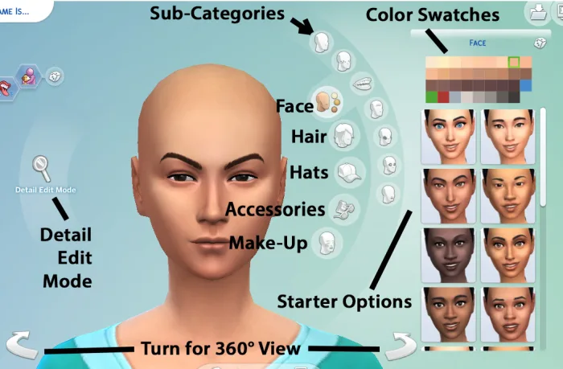

Navegación


Modo Crear
El Modo Crear un Sim (también llamado CAS por sus siglas en inglés, Create A Sim) es el lugar donde se diseñan las unidades domésticas. Se utiliza para personalizar su apariencia y personalidad, así como las conexiones familiares antes de añadirlos a la partida. Una vez colocados en el juego, sólo podrán hacerse cambios superficiales en la apariencia del Sim si se quisiera editar.
Tráiler oficial del canal de LosSimsEA España, muestra la mayoría de funciones y opciones que hay en este modo, demostrando su intuitiva y limpia interfaz.
Explicación en video del creador y del uso de mods en el juego para ampliar el contenido disponible (cortesía del canal de Youtube DeidaSims).
Punto de inicio
Al entrar la interfaz se verá así, tenemos diferentes opciones para personalizar.
Empezaremos con los datos básicos.─ Lo primero que nos deja editar es el nombre y apellido(s). Estos se pueden randomizar. ─ Podemos escoger el género y sexualidad del Sim e incluso personalizarlos al gusto. ─ Una elección muy importante es la etapa, determinará la edad inicial de nuestro Sim (infantes, niños, adolescentes, jóvenes adultos, adultos o ancianos). ─ También es posible cambiar la forma de andar, la voz y el vínculo inicial con otros Sims de la misma unidad doméstica. |

|
|---|
Aspiraciones y rasgos
|
─ Las aspiraciones son objetivos que tienen tus Sims durante su vida. En la infancia tendrán una aspiración especial que solo tienen los niños, pero cuando lleguen a adolescentes podrán escoger una nueva aspiración que durará toda la vida. Se puede cambiar entre aspiraciones en medio de la partida sin perder el progreso. ─ Las aspiraciones otorgan un pequeño rasgo extra que les ayudará a que sus objetivos sean más fáciles de cumplir. A pesar de eso son algo tediosos de cumplir. ─ Los rasgos son características que tienen los Sims, estos determinan su comportamiento, gustos y emociones. Hay 4 categorías: Emocional, Afición, Estilo de vida y Social. Los Sims pueden tener hasta 3 rasgos y algunos de ellos son incompatibles entre ellos (por ejemplo, fiel es incompatible con anti-compromiso). Los rasgos de infante y niño desaparecen al cercer a Adolescente. Los rasgos que escojas se quedarán para toda la vida Sim. |
|---|
|
─ La cara se puede editar eligiendo plantillas (el menú de la derecha) o arastrando al gusto los diferentes elementos del rostro. Hacer click en uno de estos también te lleva directamente a la categoría. Es posible modificar los ojos, el color de estos, la frente, barbilla, mentón, cuello, nariz, boca y pómulos. ─ El modo Detalle desbloquea la edición precisa, pudiendo editar aún detalles más específicos de la cara. ─ También es posible escoger el pelo, la barba, el color de estos, sombreros, gafas, pendientes, collares o incluso maquillaje. Todas estas opciones tienen un botón para aletorizar los resultados. ─ Con las teclas "A" y "D" o con las flechas se puede girar el Sim hacia los lados. También se puede usando el ratón. |
 |
|---|
Cuerpo y ropa
|
─ A la izquierda tenemos los parámetros de músculo y grasa, permite controlar el peso y tonificación. ─ A la derecha tenemos plantillas para el cuerpo (con una subcategoría para tatuajes o pelo corporal), los estilos predeterminados (conjuntos ya hechos) y todas las categorías de ropa (partes de arriba, cuerpo completo, partes inferiores, accesorios y zapatos). Todos se pueden modificar el color o incluso al azar. ─ Arriba de la ropa tenemos diferentes conjuntos para personalizar en diferentes ocasiones e incluso tener varios para la misma categoría. Estos son: Diario, Formal, Deporte, Pijama, Fiesta y Bañador. Configurar los conjuntos de Frío o Calor requiere tener el DLC de Estaciones. |
|---|
|
─ Se pueden añadir más Sims a la familia, ya sea generando Sims con genética similar (puedes hacer hijos, hermanos, padres, etc), dándole a un Sim totalmente nuevo, descargando Sims de la galería o con las historias (te hacen un cuestionario y hacen un Sim con ello). ─ Si tienes el DLC de mascotas puedes crear perros y gatos, también con opciones de genética, descargar o similares. ─ Algunos DLC traen Sims especiales que no son considerados humanos. Estos tienen sus propias genéticas y rasgos únicos. Estos se deben de generar desde el menú oculto (el que tiene símbolo de una llama redonda). Los ocultos que se pueden comprar son Vampiros, Sirenas, Magos, Hombres lobo y Aliens. Hay algunos Sims Ocultos que solo pueden conseguirse en el Modo Vivir (ejemplo los Fantasmas o los Sim-plantas). |
|---|
Menú y botones
|
─ En el menú inferior tenemos el botón de aleatorizar global (se puede modificar lo que quieres aleatorizar o no), los botones de deshacer y el botón "Aleatorizar desde la galería", que trae un Sim aleatorio de los que tengas guardados de internet. ─ En la parte superior derecha está el botón "Guardar", que permite guardarlo en tu galería, el botón para abir el menú completo de la galería, el panel de notificaciones y el panel de opciones (muestra el botón de guardar, salir, configuración, etc). |
|---|